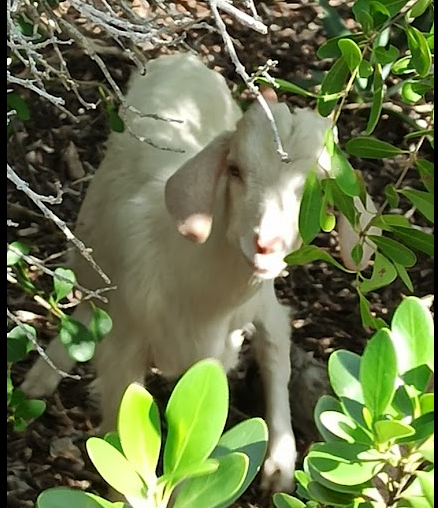
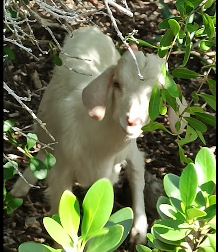

What if I chose the unpaved road?


 



When taking a vacation to the Bahamas, most people imagine sunbathing on the white sandy beach or swimming in the clear blue water, what if I instead decide to just start walking up the hill and see where nature takes me?
That is exactly what I did when I went to a small resort island called Half Moon Cay, Bahamas on December 2023. The water temperature was very cold in December so instead of suffering through the uncomfortable water, I decided to venture on a solo hike around the island.
About 10 minutes into the hike, I came across a curved path. Most people would continue the trail toward the right, but a spontaneous thought popped into my mind. What if I chose to walk on the rocky path?
Onward I went, stepping over rock pebbles and broken branches, excited to discover what lies on the other side.
I walked and walked with nothing except for a water bottle and a black hat. After 40 minutes of climbing over boulders, up and down several hills, and slipping through narrow tree openings, I finally reached the end of the rocky road.
I spent a brief moment to admire the incredible view of the blue sea from above and, revitalized with my personal achievement of hiking through uncharted grounds, I was ready to turn back and reunite with my family tanning on the beach below. What I saw next was something that noone could have ever predicted.
The moment I turned around to walk back, no doubt curious by my unusual presence on the unpaved path, a baby goat trodded barely 50 feet away. As I came closer, I bent down to be within 6 feet of the baby goat looking inquisitively at me. Unfortunately, I did not have any food to offer him but I will be sure to bring some trail mix on every nature hikes from now on.
Coming down from the hike, I did not expect to find an even rarer discovery. What I thought was just a beautiful shell turned out to be the home of a young hermit crab with a surprisingly very sturdy grip. And what a fitting theme to this story. A hermit crab isn't afraid to try on new shells as they grow. Let us all live in the same way and turn the What if into What we did"